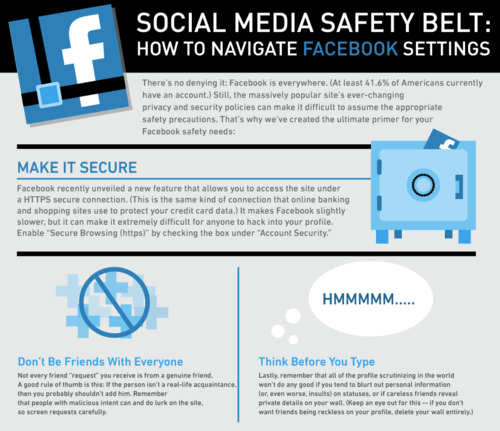

Wed, 23 Mar 2011 10:48:50 · infographic · facebook · design
Infographic: Put Safety Belt on Your Facebook
Don’t fall into a trap of being afraid to be labeled as a social nerds when it comes to the number of friends you have on your Facebook, or lack thereof. Maxing out the number of friends you are allowed to have on Facebook doesn’t really give you any (real world) advantage other than being known as social media whore (yes, there I said it!). Befriending just every bloke you met at last night party, or girls you think you might have a shot at getting lucky with ain’t that cool anymore. There’s a reason why being selective will pay off in the long run. It’s a balancing act for sure. You don’t want to be rude as to ignore your aunt, uncles, heck even your dear mother’s friend request, but hey do you really want them being exposed to all your shenanigans?

Here’s a quick tips on how to navigate Facebook privacy settings and put that safety belt on. Oh one more thing, being picky is cool! Don’t just let anyone be your friend on Facebook… beware of online stalker!